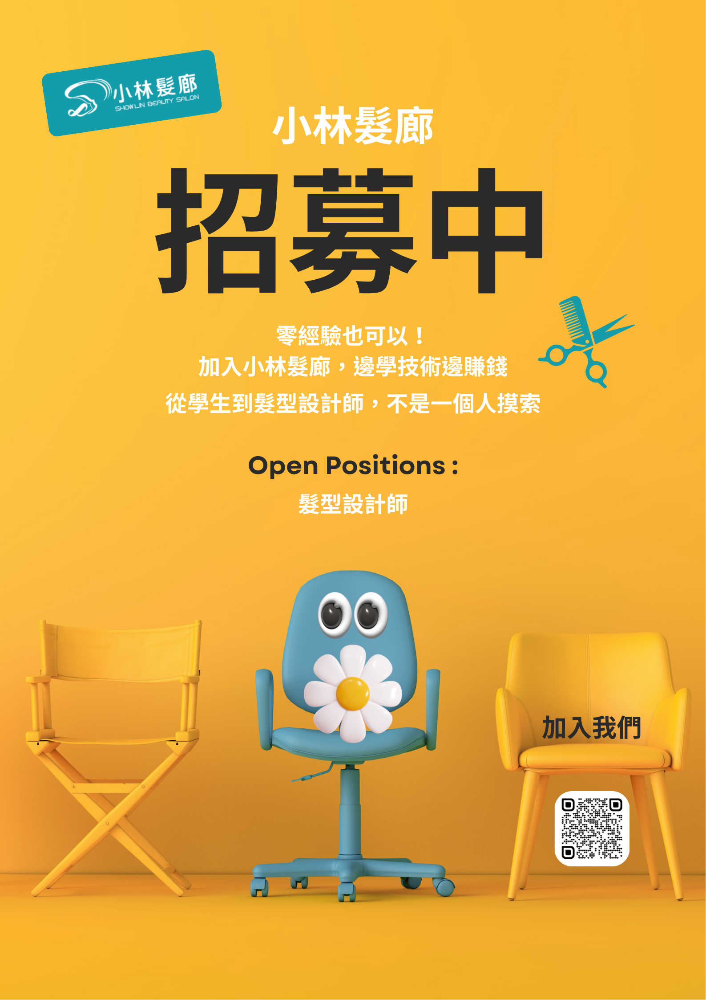
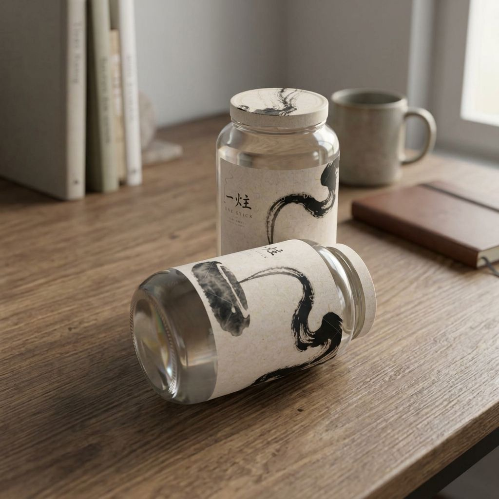
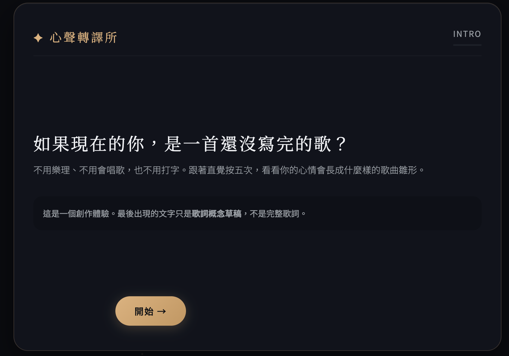
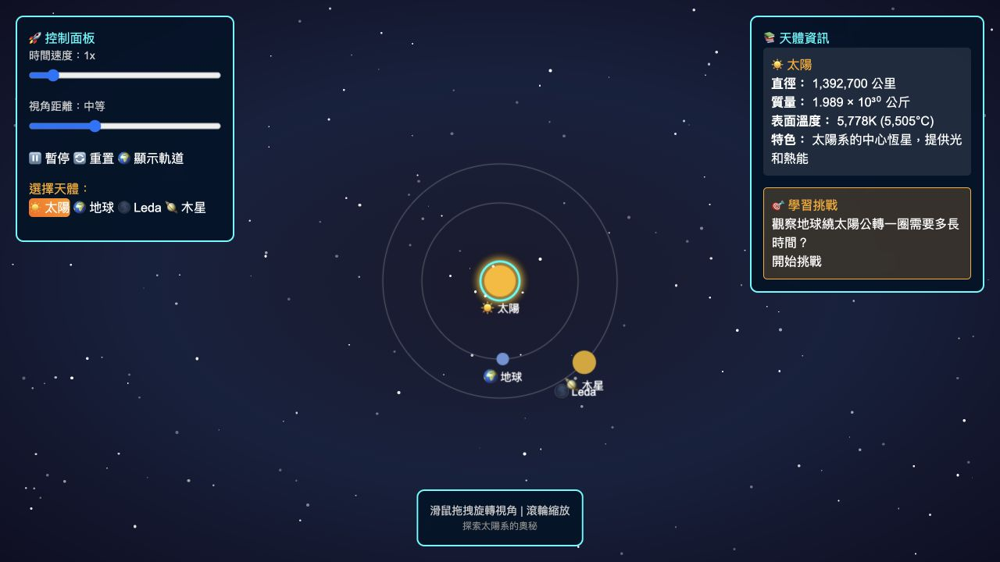
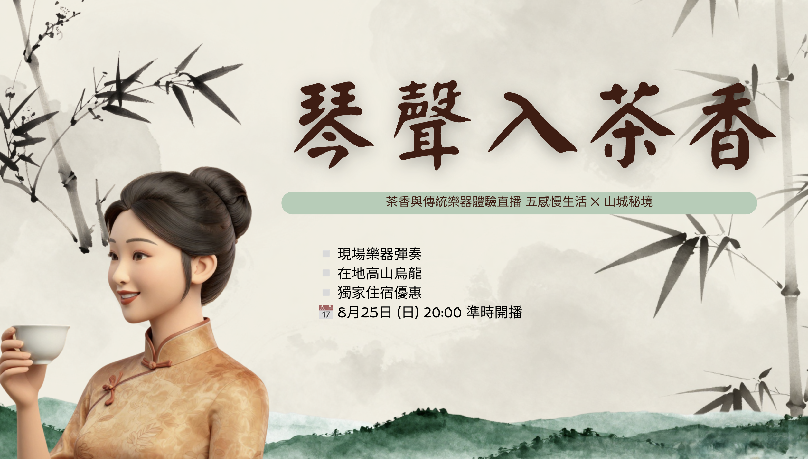

2021 — 至今
台北
台北
So-net Octave Music｜音樂製作與業務代表
- 統籌音樂製作專案，涵蓋作曲、編曲、遊戲配樂、混音與母帶階段的品質監控。
- 管理時程與預算，在創作者與客戶間協作完成約 100 件專案。
- 開發約 30 位潛在客戶，成功促成首件網紅音樂製作案。

小林髮廊設計師招募海報
一炷 線香品牌企劃＆視覺設計
心聲轉譯工作坊 品牌創始
網站＆小程式設計部署
民宿推廣企劃MUSIC MAKER / CREATIVE PROJECT MANAGER
以音樂製作、專案協作與品牌視覺，將創意想法落地為能被聽見與看見的作品。
東吳大學 商學系學士｜2009 — 2013
TOEIC 775｜GEPT 全民英檢中級
曾於西班牙深度自助旅行兩個月，具跨文化溝通與西語基礎能力。
詞曲作品：炎亞綸〈模型〉、閻奕格〈聲音的信仰〉、符瓊音〈失控〉等